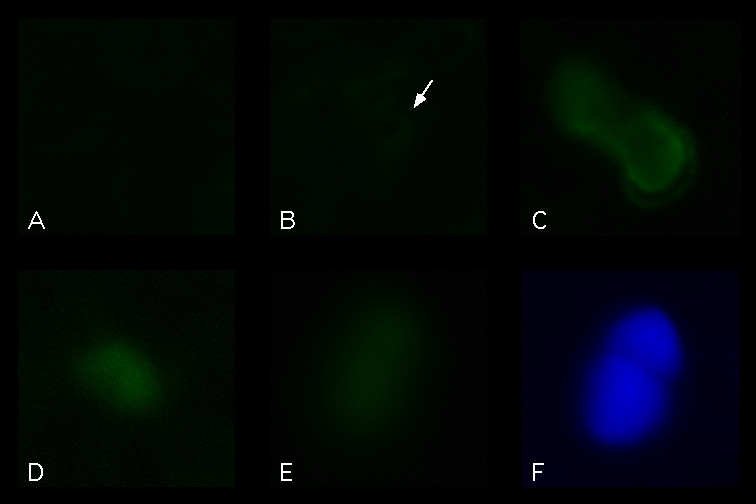

Figure 3  Analysis of transient GFP expression in A. thaliana epidermal cells. GFP was introduced by particle bombardment, and fluorescent cells were imaged with a Sensys CCD camera. Comparisons of nontreated cells (A), or cells expressing mGFP4 (B), smGFP (C), smRS-GFP (D), or smBFP (E,F). Panel A-E viewed under blue excitation (470-490nm) and green emission (515-550nm). Panel F viewed under UV excitation (360-370nm) and blue emission (420-460nm). Epidermal cells viewed under 400X magnification.